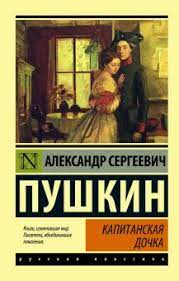

История
Ранние годы
 Александр Сергеевич Пушкин родился 6 июня (по старому стилю 26 мая) 1799 года в Москве в семье нетитулованного дворянского рода. Прадедом поэта по матери был африканец Абрам Петрович Ганнибал, являвшийся воспитанником и слугой царя Петра I.
Александр Сергеевич Пушкин родился 6 июня (по старому стилю 26 мая) 1799 года в Москве в семье нетитулованного дворянского рода. Прадедом поэта по матери был африканец Абрам Петрович Ганнибал, являвшийся воспитанником и слугой царя Петра I.
В семье, кроме Александра Сергеевича, было еще двое детей – сын Лев и дочь Ольга. С 1805 по 1810 год Пушкин проводил много времени (особенно летом) у своей бабушки в подмосковном селе Захарове. Именно бабушка наняла Арину Родионовну Яковлеву, няню, которую так полюбил юный Пушкин.
Образование и начало творческого пути
В 1811 году Пушкин учился в Царскосельском Лицее. В биографии Пушкина важно выделить, что впервые его стихи появляются в печати в 1814 году, в журнале «Вестник Европы», где публикуется его стихотворение «К другу-стихотворцу». В этот же период поэта принимают в литературное общество «Арзамас».
Вольтер и Эварист Парни были любимыми авторами юного Пушкина.
На дальнейшее творчество молодого Пушкина огромное влияние оказали труды таких классиков русской литературы, как Батюшков, Жуковский, Фонвизин и Радищев.
Пушкин оканчивает лицей в 1817 году и выпускается в чине коллежского секретаря 12-го класса, после чего его определяют в Коллегию иностранных дел.
Личная жизнь
В 1830 году Пушкин сватается к Наталье Гончаровой, а 18 февраля (2 марта по старому стилю) 1831 года Пушкин и Гончарова венчаются в Москве. Весной молодожены переезжают в Царское Село, где снимают дачу. В 1836 году в семье было уже четыре ребенка.
Последние годы жизни
Важно отметить такой момент в биографии Пушкина: после повышения в чин камер-юнкера, Александр Пушкин принимает решение покинуть службу и подает в отставку. Положение поэта выглядит и вовсе бедственно, поскольку многие произведения Пушкина не допускаются к печати из-за цензуры (например, поэма «Медный всадник»).
В 1834 году Пушкин дописывает повесть «Пиковая дама», которую немедленно отсылает в журнал «Библиотека для чтения». За повесть он получает высокий гонорар, но решить финансовые вопросы так и не удается.
В 1836 году Александр Сергеевич Пушкин решает издавать журнал «Современник». Однако популярностью у публики журнал не пользуется. В четвёртом томе этого журнала был впервые напечатан исторический роман «Капитанская дочка».
В 1837 году между Александром Сергеевичем Пушкиным и Жоржем Дантесом возник конфликт. Пушкин вызывает Дантеса на дуэль, и в результате получает смертельное ранение в живот.
Император Николай I, зная о тяжелом состоянии поэта, обещает обеспечить достатком семью и выплатить все долги. Впоследствии монарх выполнил все обещания. Умер поэт 29 января (10 февраля) 1837 года.
Интересные факты о Пушкине
- По количеству написанных о нем книг Пушкин занимает 19 место за всю историю человечества. Он находится позади Иисуса и Вагнера, но опережает Ганди и Бетховена.
- Пушкин был невысок: всего 161 см. У него были голубые глаза, выпуклая челюсть и вьющиеся непослушные волосы. Однажды он описал свою внешность как достойную «истинной обезьяны».
- Пушкин учился в императорском лицее в Царском Селе, под Санкт-Петербургом. Там он вступил в контакт с революционерами-декабристами, которые устроили восстание против царя в 1825 году, но молодой Александр не участвовал в их попытке государственного переворота.
- Пушкин заложил свое имущество, чтобы расплатиться с долгами, и постоянно ухудшал свое положение, занимая деньги под высокие процентные ставки. Денежные проблемы были его основной мотивацией к писательству.
- Пушкинский стиль письма менее проповеднический и моралистический, нежели, например, у Толстого и Достоевского. Ему было интереснее писать о радостях жизни, чем размышлять над темнотой души.
Труды
Роман в стихах «Евгений Онегин» (1831)
Роман "Евгений Онегин" — "энциклопедия русской жизни" — представлен в данной книге со знаменитыми комментариями Ю. М. Лотмана, позволяющими читателю глубже постичь дух и нравы эпохи, герои которого уже третий век любимы читателями. Книга проиллюстрирована рисунками А. С. Пушкина, сделанными поэтом на рукописных страницах романа.
Роман «Дубровский» (1833)
Роман «Дубровский» А.С. Пушкина является наиболее известным русским разбойничьим романом, созданном в духе популярного в Англии, Франции и Германии XVIII-XIX веков жанре литературного сочинения, в центре которого находится образ благородного разбойника. В основе романа лежит мысль о моральном разложении русского дворянства и его противостоянии простому народу. Раскрыты темы защиты чести, семейного бесправия, крестьянского бунта.
Роман «Капитанская дочка» (1836)
«Капитанская дочка» представляет собой исторический роман (в некоторых источниках – повесть), написанный А.С. Пушкиным. Автор повествует нам о зарождении и развитии большого и сильного чувства между молодым знатным офицером и дочерью коменданта крепости. Все это происходит на фоне восстания Емельяна Пугачева и создает для влюбленных дополнительные преграды и трудности в жизни. Роман написан в форме мемуаров. Такое переплетение исторической и семейной хроники придает ему дополнительный шарм и очарование, а также заставляет поверить в реальность всего происходящего.

Повесть «Пиковая дама» (1834)
Знаменитый шедевр А. Пушкина - "Пиковая дама" актуален и востребован и в наши дни. Ведь азарт, алчность, желание достичь своих целей любыми средствами неистребимы в человеке. Тема игры, талантливо подхваченная и осмысленная Ф. Достоевским в повести "Игрок", разработана великим Пушкиным как судьбоносная фатальность, а ставшее афоризмом выражение "Тройка, семерка, туз" - символом судьбы, которую невозможно обмануть.
Поэма «Руслан и Людмила» (1820)
«Руслан и Людмила» — чудесная, нестареющая в веках поэма А. С. Пушкина, написанная в духе и по мотивам старинных русских сказок и былин. Современники Пушкина с восторгом приняли эту волшебную сказку в стихах. И с тех пор каждое новое поколение переживает за красавицу Людмилу, с замиранием сердца следит за приключениями князя Руслана и желает ему победы над злобным карликом Черномором.